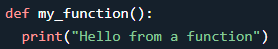

A function is a block of code which only runs when it is called.
You can pass data, known as parameters, into a function.
A function can return data as a result.
Syntax:
def name(*parameters):
statement

A parameter is the variable listed inside the parentheses in the function definition.
An argument is the value that is sent to the function when it is called.

Default Parameter Value
If we call the function without argument, it uses the default value.
syntex:
def name(argument = value):
statement

Passing data types as an Argument
You can send any data types of argument to a function (string, number, list, dictionary etc.), and it will be treated as the same data type inside the function.

Special parameters (for Devs)
For readability and performance, it makes sense to restrict the way arguments can be passed so that a developer need only look at the function definition to determine if items are passed by position, by position or keyword, or by keyword.

1.Positional-or-Keyword Arguments
If
/ and
* are not present
in the function definition, arguments may be passed to a function by position or by keyword.
2.Positional-Only Parameters
Positional-only parameters are placed before a
/ (forward-slash)
. The
/ is used to logically separate the positional-only parameters from the rest of the parameters. If there is no
/ in the function
definition, there are no positional-only parameters.
3.Keyword-Only Arguments
To mark parameters as
keyword-only, indicating the parameters must be passed by keyword argument, place an
* in the arguments list
just before the first
keyword-only paramete
r.

Keyword Arguments
You can also send arguments with the key = value syntex,
This way the order of the arguments does not matter.

Arbitrary Arguments, *args
If you do not know how many arguments that will be passed into your function, add a * before the parameter name in the function definition.
This way the function will receive a tuple of arguments, and can access the items accordingly:

Note: Arbitrary arguments are the last parameter of the function, because they scoop up all remaining input arguments that are passed after this to the function
.Any formal parameters which occur after the
*args parameter are ‘keyword-only’ arguments, meaning that they can only be used as keywords rather than positional arguments.
Arbitrary Keyword Arguments, **kwargs
If you do not know how many keyword arguments that will be passed into your function, add two asterisk: ** before the parameter name in the function definition.
This way the function will receive a dictionary of arguments, and can access the items accordingly:


Unpacking Argument Lists
when the arguments are already in a list or tuple but need to be unpacked for a function call requiring separate positional arguments
syntax:
*variable

Unpacking Argument Dictionary
when the arguments are already in a
dictionary but need to be unpacked for a function call requiring separate positional arguments
syntex:
**variable

Return Values
To let a function return a value, use the return keyword

To let a function return a values one by one, use the yield keyword

The pass Statement
function definitions cannot be empty, but if you for some reason have a function definition with no content, put in the pass keyword to avoid getting an error.

Recursion
Python also accepts function recursion, which means a defined function can call itself.
Recursion is a common mathematical and programming concept. It means that a function calls itself. This has the benefit of meaning that you can loop through data to reach a result.

Lambda Expressions
A lambda function is a small anonymous function.
A lambda function can take any number of arguments, but can only have one expression.
Syntax:
lambda *arguments : expression